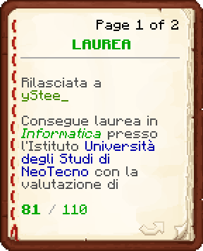
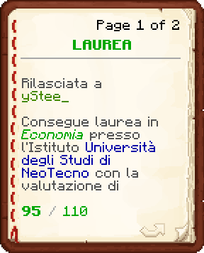

Stefano Martino nasce a Messina in una famiglia benestante, crescendo tra privilegi, studio e una precoce passione per l’informatica. L’infanzia serena viene spezzata a diciassette anni, quando problemi familiari lo costringono a lasciare la sua città e gli amici.
A NeoTecno ricomincia da zero, diplomandosi ai corsi serali e affrontando lavori umili come il TastyBurger, dove impara disciplina e resilienza. Il suo percorso prosegue all’Agenzia Consulenze, dove si distingue per impegno e affidabilità, pur senza raggiungere ruoli dirigenziali.
Determinato a crescere, Stefano porta avanti gli studi fino a laurearsi in Informatica e in Economia, avviandosi anche verso la laurea in Giurisprudenza. La sua vera vocazione emerge però nel Corpo Nazionale dei Vigili del Fuoco. Con il tempo si distingue per sangue freddo, leadership e dedizione assoluta verso i cittadini. La sua determinazione lo porta a raggiungere la qualifica di Capo Squadra Esperto, ruolo in cui supporta le squadre durante gli interventi con lucidità e coraggio, diventando un punto di riferimento per i colleghi e un baluardo di sicurezza per la comunità.
 Laurea in Informatica
Laurea in Informatica

Laurea in Economia

Diploma